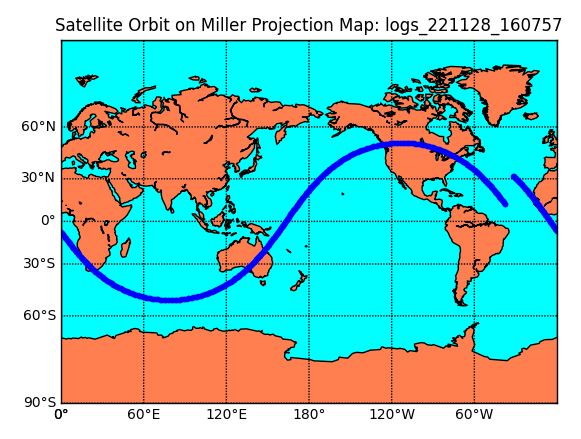
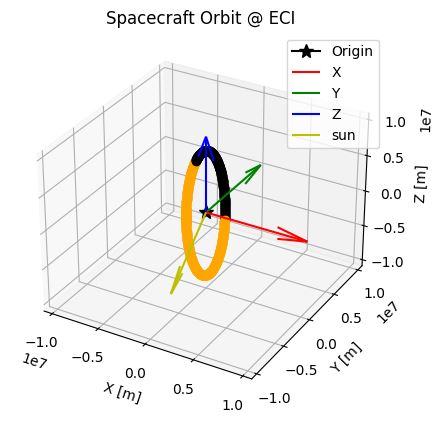
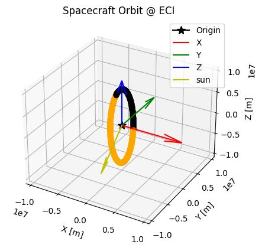

Getting Started
1. Overview
- This tutorial explains how to use the S2E simulator without any source code modification.
- Users can start this tutorial just after users clone the s2e-core repository.
- The supported version of this document
- Please confirm that the version of the documents and s2e-core is compatible.
2. Clone, Build, and Execute
- Clone s2e-core.
- Read
README.mdto check the overview of S2E. - Build and execute the
s2e-coreby referring following documents depends on your development environment.
3. Check log output
- Check
./data/sample/logsto find CSV log output file- The file name includes executed time as
YYMMDD_HHMMSS_default.csv - The included executed time is defined by the user computer settings.
- The file name includes executed time as
- Open the CSV log file
- You can see the simulation output
- The meaning of each value is described in the first row
- A general rule of the header descriptions are summarized here.
- You can write a graph from the CSV file as you need.
- You can find plot examples written in Python in the
scripts/Plotdirectory. - Please see How to Visualize Simulation Results for more details.
- You can find plot examples written in Python in the
4. Edit Simulation Conditions
- Move to
./data/sample/initialize_filesdirectory - You can find the several initialize files (INI files). In these initialize files, simulation conditions are defined, and you can change the conditions without rebuild of S2E by editing the initialize files.
- Open
sample_simulation_base.ini, which is the base file of the initialize files.- In this base file, other initialize files are defined.
- You can see simulation conditions as time definitions, randomize seed definitions, etc.
- Open
sample_satellite.ini, which is the file to set the spacecraft parameters. - Edit the value of angular momentum
initial_angular_velocity_b_rad_s(0-2)in the[Attitude]section as you want. - Set the value of
initialize_modetoMANUALif it isCONTROLLED. - Rerun the
s2e-corewithout a rebuild - Check the new log file in
./data/sample/logsto confirm the initial angular velocity is changed as you want. - Of course, you can change other values similarly.
5. Edit Simulation Conditions: Disturbances
- Move to
./data/sample/inidirectory again - Open
sample_disturbance.ini, which defines conditions to calculate orbital disturbance torques and forces- Currently, S2E supports the following disturbances:
- Gravity Gradient torque
- Magnetic Disturbance torque
- Air drag torque and force
- Solar radiation pressure torque and force
- Geo Potential acceleration
- Third body gravity acceleration
- Currently, S2E supports the following disturbances:
- You can select
ENABLEorDISABLEof calculation and log output for each disturbance - Edit all
calculationparameters of each disturbance ascalculation = DISABLE - Rerun the
s2e-corewithout a rebuild - Check the new log file in
./data/sample/logsto confirm the spacecraft is not affected by any disturbance torque and the angular velocity and quaternion are not changed. You can also plot by following command and see all the disturbance torque and force are zero. (assuming you already created apipenvvirtual environment)# Windows cd scripts/Plot pipenv run python .\plot_disturbance_torque.py --file-tag <log file tag> pipenv run python .\plot_disturbance_force.py --file-tag <log file tag> - Edit
calculationof [THIRD_BODY_GRAVITY] ascalculation = ENABLE - Rerun the S2E_CORE without a rebuild
- Rerun the python script to check the third body gravity is generated.
6. Edit Simulation Conditions: Orbit
-
Move to
./data/sample/inidirectory -
Open
sample_satellite.iniand see the[Orbit]section, which defines conditions to calculate orbit motion- Currently, S2E supports several types of orbit propagation. Please see Orbit specification documents for more details.
-
Please set the parameters as follow:
propagate_mode = SGP4: SGP4 Propagatorinitialize_modeis not used in the SGP4 propagate mode.- TLE: ISS orbit (default)
-
To get a long-term orbit simulation data, edit the following simulation time settings in
sample_simulation_base.inisimulation_duration_s = 6000log_output_period_s = 10(to decrease the output file size)
-
To visualize the orbit result, execute the
plot_satellite_orbit_on_miller.pyandplot_orbit_eci.pyby following command. You can see the plots as follows. Please see general documents for more details on visualization of simulation results.# Windows cd scripts/Plot pipenv run python .\plot_satellite_orbit_on_miller.py --file-tag <log file tag> pipenv run python .\plot_orbit_eci.py --file-tag <log file tag>

-
Change TLE as you want
- Example: PRISM (Hitomi)
tle1=1 33493U 09002B 22331.71920614 .00003745 00000-0 29350-3 0 9995 tle2=2 33493 98.2516 327.9413 0016885 9.3461 350.8072 15.01563916753462
- Example: PRISM (Hitomi)
-
Rerun the
s2e-corewithout a rebuild -
Check the new log file in
./data/sample/logsto confirm the spacecraft position in ECI framespacecraft_position_iis changed. -
To visualize the orbit result, execute the
plot_satellite_orbit_on_miller.pyandplot_orbit_eci.py. You can see the different plots as follows.
 

7. Edit Simulation Conditions: Environment
- Move to
./data/sample/inidirectory - Open
sample_local_environment.ini, which defines conditions to calculate the environment around the spacecraft- Currently, S2E supports the following environment models:
- Celestial information: CSPICE
- Geomagnetic field model: IGRF with random variation
- Solar power model: Considering solar distance and eclipse
- Air density: NRLMSISE-00 model with random variation
- Currently, S2E supports the following environment models:
- Edit values of
magnetic_field_random_walk_standard_deviation_nT, magnetic_field_random_walk_limit_nT, magnetic_field_white_noise_standard_deviation_nT - Rerun the
s2e-corewithout a rebuild - Check the new log file in
./data/sample/logsto confirm the magnetic field at the spacecraft position in ECI framegeomagnetic_field_at_spacecraft_position_i, the magnetic field in body framegeomagnetic_field_at_spacecraft_position_b, and magnetic disturbance torque in body framemagnetic_disturbance_torque_bare changed.